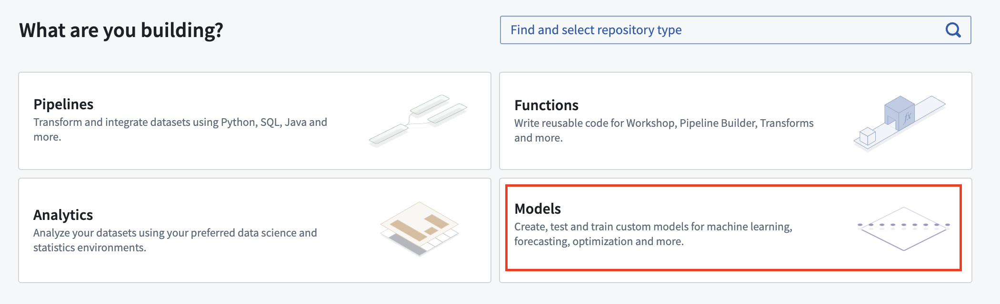
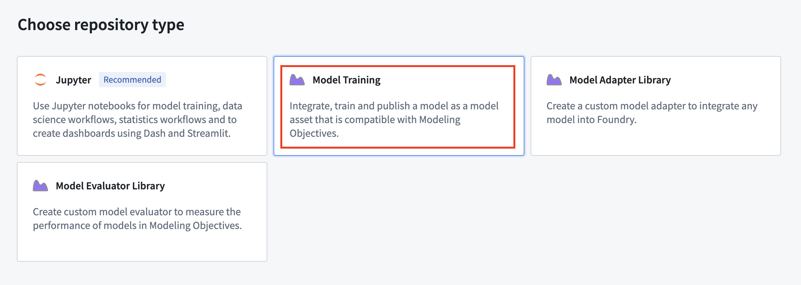
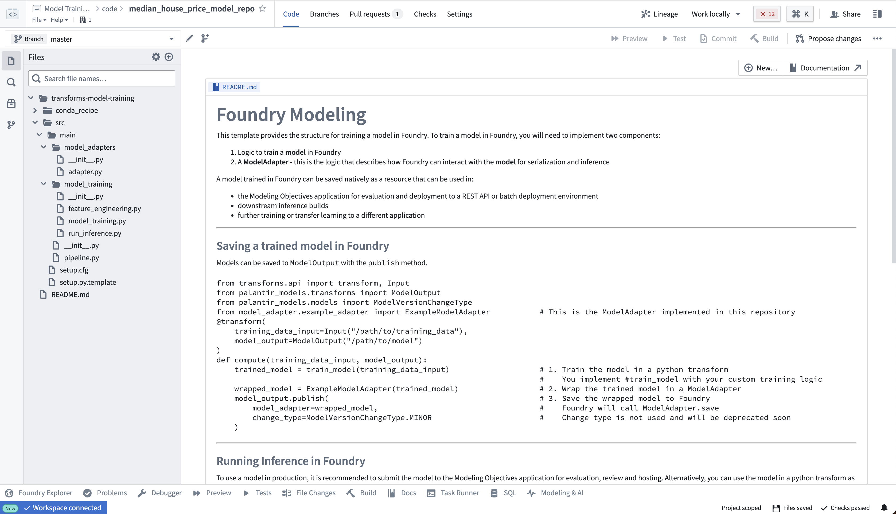

This page provides best practices and instructions for migrating a model built with foundry_ml to the palantir_models framework. To start, we share some guidance to consider, before providing an example migration. In the example, we provide code for building a model in Code Repositories using foundry_ml, and demonstrate how to rewrite this code using palantir_models.
In the following section, we list guidance on how the migration can be performed and what considerations to take.
You can build the migrated model in the following ways:
Both methods have advantages and which is best depend on your particular situation, but there are a few things to keep in mind:
palantir_models.To understand how to use a new code repository to build your model, review the following example.
To keep your existing modeling repository and migrate it from foundry_ml to palantir_models in place, follow these steps:
foundry_ml.foundry_ml library from the Libraries sidebar.conda_recipe/meta.yaml file directly and updating the existing Python dependency to python >=3.11.* (or 3.10.*, if required) in both the build and run blocks. Note that Python 3.9 will be deprecated in October 2025 as part of a dedicated migration campaign.palantir_models from the Libraries sidebar. Do not do this by editing meta.yaml directly as it will not import the required backing repositories.:::callout{theme="warning"}
If using an existing repository of the Pipeline type rather than Model training or Model adapter library to create your Model adapter, you will not benefit from the latest modeling features unless you upgrade your repository. This upgrade action is necessary for your model to support direct deployments.
:::
foundry_ml in Code RepositoriesThe following is an example migration from foundry_ml to palantir_models in Code Repositories.
The following snippet demonstrates a scikit-learn linear regression model authored to use foundry_ml, which we will migrate to palantir_models:
from transforms.api import transform, Input, Output
from foundry_ml import Model, Stage
from sklearn.linear_model import LinearRegression
from sklearn.pipeline import Pipeline
from sklearn.preprocessing import StandardScaler
@transform(
training_data_input=Input("<YOUR_PROJECT_PATH>/data/housing_train_data"),
model_output=Output("<YOUR_PROJECT_PATH>/models/linear_regression_foundry_ml"),
)
def create_model(training_data_input, model_output):
training_df = training_data_input.pandas()
numeric_features = ['median_income', 'housing_median_age', 'total_rooms']
pipeline = Pipeline([
("scaler", StandardScaler()),
("regressor", LinearRegression())])
X_train = training_df[numeric_features]
y_train = training_df['median_house_value']
pipeline.fit(X_train, y_train)
model = Model(Stage(pipeline["scaler"], output_column_name="features"),
Stage(pipeline["regressor"]))
model.save(model_output)
To migrate the above code from foundry_ml to palantir_models, follow the steps outlined below.
The Palantir platform provides a templated repository for machine learning called the Model training template. To access it in Code Repositories, first select Models when asked What are you building?:

Select Model Training as the repository type:

The model training template contains the example structure that we will adapt for this tutorial. You can expand the files on the left side to see an example project:

Model adapters provide a standard interface for all models in Foundry. This standard interface ensures that all models can be used immediately in production applications. The Palantir platform will handle the infrastructure to load the model and its Python dependencies, interface with it, and expose its API.
To enable this, you must create an instance of a ModelAdapter class to act as this communication layer.
There are three functions to implement:
Open the model_adapters/adapter.py file and author the model adapter:
import palantir_models as pm
from palantir_models.serializers import DillSerializer
class SklearnRegressionAdapter(pm.ModelAdapter):
@pm.auto_serialize(
model=DillSerializer()
)
def __init__(self, model):
self.model = model
@classmethod
def api(cls):
columns = [
('median_income', float),
('housing_median_age', float),
('total_rooms', float)
]
return {'df_in': pm.Pandas(columns=columns)}, \
{'df_out': pm.Pandas(columns=columns + [('prediction', float)])}
def predict(self, df_in):
df_in['prediction'] = self.model.predict(df_in[['median_income', 'housing_median_age', 'total_rooms']])
return df_in
For more information about model adapter logic, refer to author a model adapter.
In the example below, the train_model function contains an unchanged example of the training logic from foundry_ml. The compute function wraps the model with the model adapter, and publishes the model.
from transforms.api import transform, Input, lightweight
from palantir_models.transforms import ModelOutput
from main.model_adapters.adapter import SklearnRegressionAdapter
from sklearn.linear_model import LinearRegression
from sklearn.pipeline import Pipeline
from sklearn.preprocessing import StandardScaler
def train_model(training_df):
"""Training logic is unchanged from the original foundry_ml example."""
numeric_features = ['median_income', 'housing_median_age', 'total_rooms']
pipeline = Pipeline([
("scaler", StandardScaler()),
("regressor", LinearRegression())]
)
X_train = training_df[numeric_features]
y_train = training_df['median_house_value']
pipeline.fit(X_train, y_train)
return pipeline
# Use the lightweight decorator unless your model natively supports Spark inputs
# (i.e. uses Spark ML). Without it, the input data will first be loaded in Spark
# and will require conversion to Pandas for use in the model, which is a slow and
# memory-intensive operation.
# Lightweight requires the foundry-transforms-lib-python package
# and for the repository to be up-to-date.
# https://palantir.com/docs/foundry/code-repositories/repository-upgrades
@lightweight()
@transform(
training_data_input=Input("<YOUR_PROJECT_PATH>/data/housing_train_data"),
model_output=ModelOutput("<YOUR_PROJECT_PATH>/models/linear_regression_model"),
)
def compute(training_data_input, model_output):
training_df = training_data_input.pandas()
# train model
model = train_model(training_df)
# wrap model with model adapter
foundry_model = SklearnRegressionAdapter(model)
# publish the model
model_output.publish(model_adapter=foundry_model)
Open the model_training/model_training.py file in your repository and author the compute function for your model. Copy your model's machine learning logic into the train_model function. Update paths to correctly point to the training dataset and model. Select Build at the top right to run the code.
Open the model_training/run_inference.py file in your repository and author the model inference logic. Update paths to correctly point to the model and test dataset. Select Build at the top right to run the code.
:::callout{theme="neutral"}
To run a model within a transform repository in which the model was not defined, set use_sidecar = True in ModelInput. This will automatically import the model adapter and its dependencies while running them in a separate environment to prevent dependency conflicts. use_sidecar is unavailable for Lightweight transforms. Review the ModelInput class reference for more details.
If use_sidecar is not set to True, the model adapter and its dependencies must be imported into or defined within the current code repository.
:::
from transforms.api import transform, Input, Output, lightweight
from palantir_models.transforms import ModelInput
# Lightweight requires the foundry-transforms-lib-python package
# and for the repository to be up-to-date.
# https://palantir.com/docs/foundry/code-repositories/repository-upgrades
@lightweight()
@transform(
testing_data_input=Input("<YOUR_PROJECT_PATH>/data/housing_test_data"),
model_input=ModelInput("<YOUR_PROJECT_PATH>/models/linear_regression_model_asset"),
predictions_output=Output("<YOUR_PROJECT_PATH>/data/housing_testing_data_inferences")
)
def compute(testing_data_input, model_input, predictions_output):
inference_outputs = model_input.transform(testing_data_input)
predictions_output.write_pandas(inference_outputs.df_out)
Following these steps above will complete the migration of your existing foundry_ml model in Code Repositories to palantir_models.
We recommend replacing MetricSets with experiments where possible. However, while experiments now support image metrics, note they do not yet support chart metrics, contrary to MetricSets. While MetricSets will not appear on the model page for a model built with palantir_models, it is still possible to write MetricSets against a model and view the metrics in Modeling Objectives.
To do so, author your model in Code Repositories and add the foundry_ml_metrics library to your environment. Here is an example of how to use a MetricSet in conjunction with palantir_models:
import uuid
from transforms.api import transform, Input, Output
from palantir_models.transforms import ModelInput
from foundry_ml_metrics import MetricSet # add foundry_ml_metrics to your environment
@transform(
evaluation_data_input=Input("path_to_input"),
model_input=ModelInput("path_to_model"),
metric_set_output=Output("path_to_output"),
)
def compute(training_data_input, model_input, metric_set_output):
metric_set = MetricSet(
# Pass the "hash" part of the model version identifier, for example, given
# ri.models.main.model-version.6c0f17a8-ad73-46a4-b86e-8d0a13327ef2,
# only pass 6c0f17a8-ad73-46a4-b86e-8d0a13327ef2.
model=uuid.UUID(
# The model_version_rid property is only available on the ModelInput class
# for versions of palantir_models greater or equal to 0.1602.0.
model_input.model_version_rid.replace("ri.models.main.model-version.", "")
),
input_data=evaluation_data_input
)
metric_set.add(name='Accuracy', value=0.8)
metric_set.add(name='F1', value=0.95)
metric_set.save(metric_set_output)
Next, configure the evaluation_data_input dataset as an evaluation dataset in Modeling Objectives' evaluation configuration. The metrics will then appear under that dataset in Modeling Objectives' evaluation view.